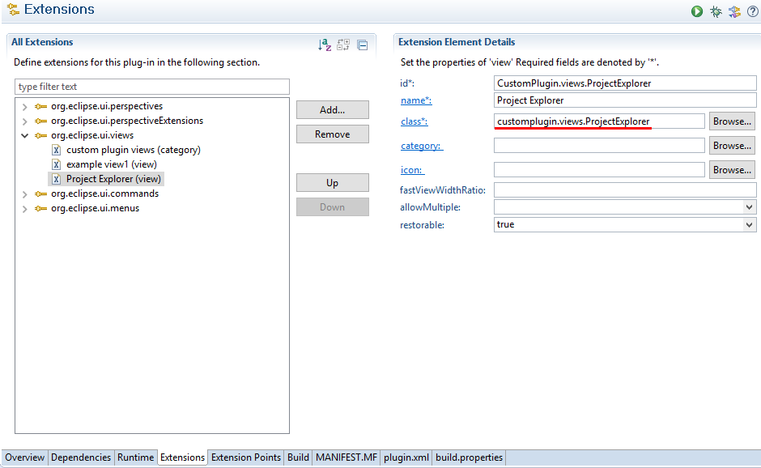
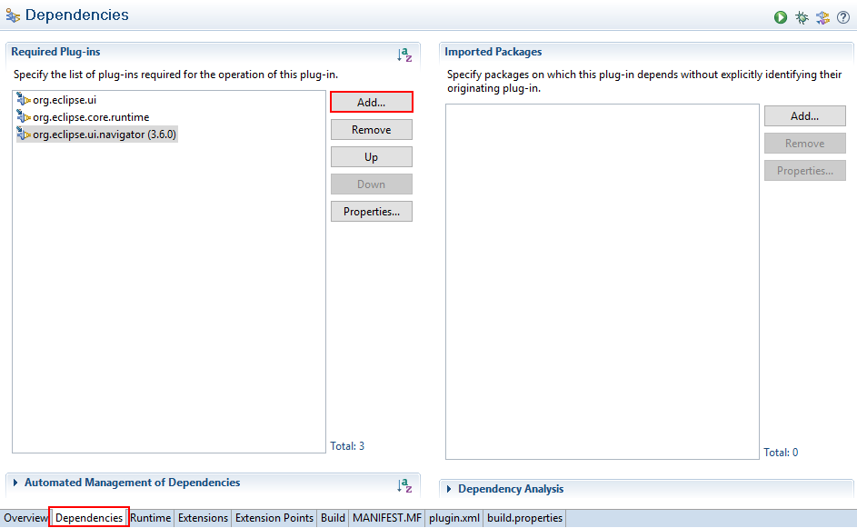
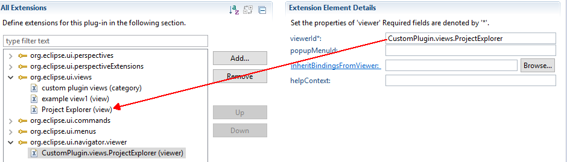
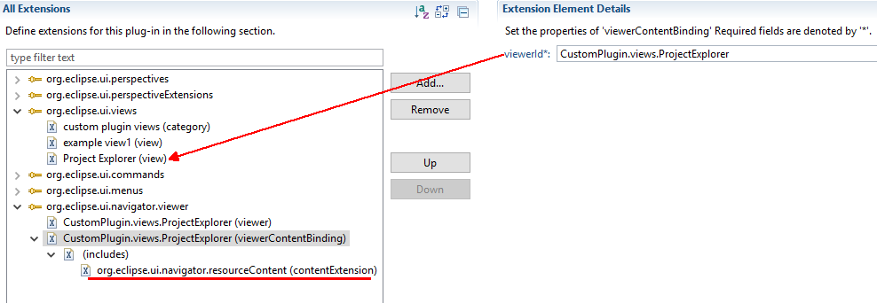
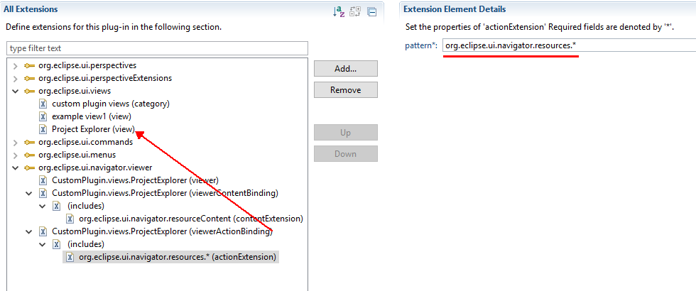
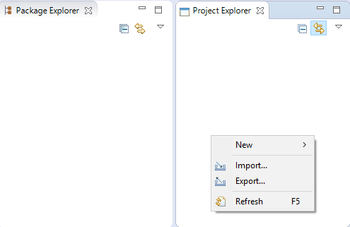
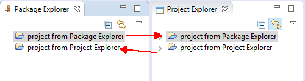

1. Common navigator is a kind of view. Thus, create a view named “Project Explorer” firstly. This view should extend the CommonNavigator
2. Add the id “CustomPlugin.views.ProjectExplorer” to the class which can be used to call the navigator.
import org.eclipse.swt.widgets.Composite;
import org.eclipse.ui.navigator.CommonNavigator;
import org.eclipse.ui.part.ViewPart;
public class ProjectExplorer extends CommonNavigator {
public static final String ID = "CustomPlugin.views.ProjectExplorer";
}
3. Add org.eclipse.ui.navigator.viewer extension. You may find there is no this extension point if it is the first time to add it. In this case, you should add org.eclipse.ui.navigator dependency firstly.
Add the org.eclipse.ui.navigator.viewer extension and add the project explorer viewer to this extension.
4. Add the viewerContentBinding and set the id to theproject explorer view. after adding includes node, add contentExtension to it. The pattern of this contentExtension should be org.eclipse.ui.navigator.resourceContent. Content extension controls the contents which could be shown on the project explore.
5. Add the viewerActionBinding and action extension whose steps are similar with viewerContentBinding. Action extension controls the right-click actions on the project explorer.
6. Result
Run the application. Click Window->Show View->Other. Find the custom Project Explorer from the custom plugin views category.
Try to use New action to create a new project and the project will show both in the Package Explorer and Project Explorer and vice versa.
